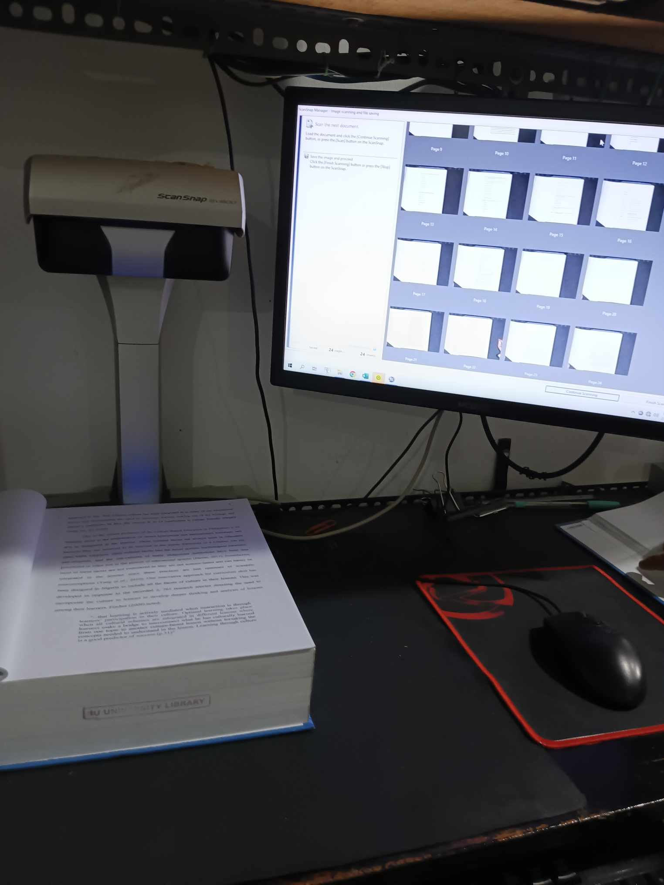
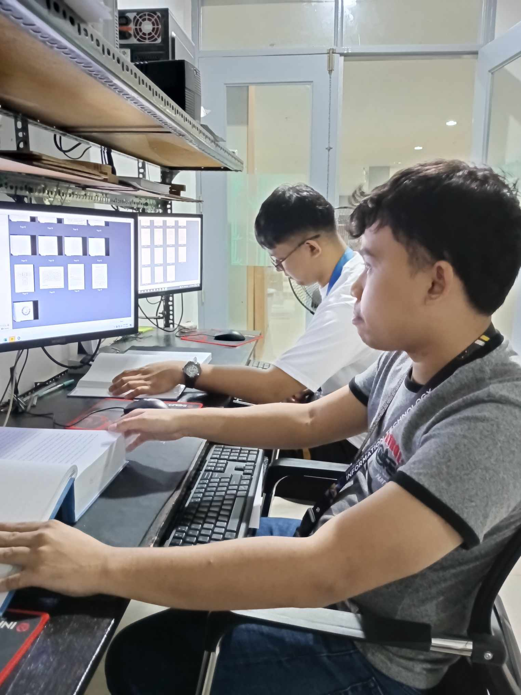
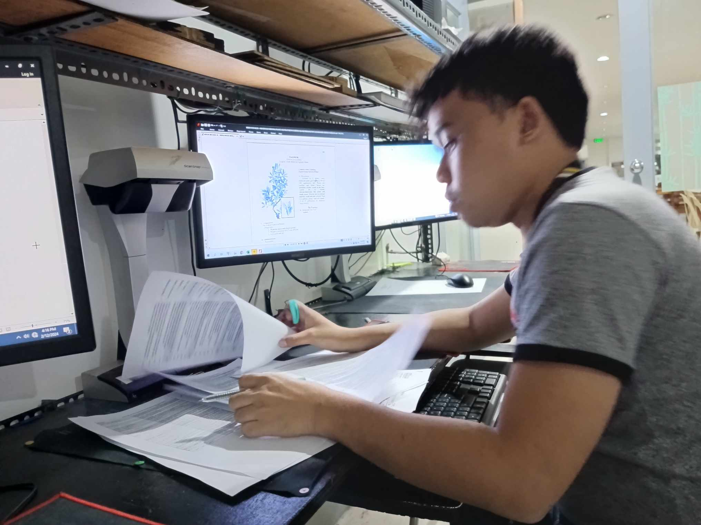
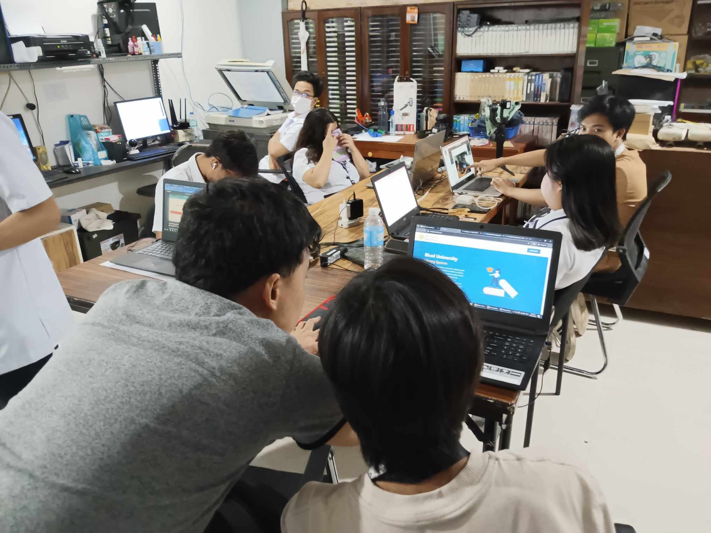
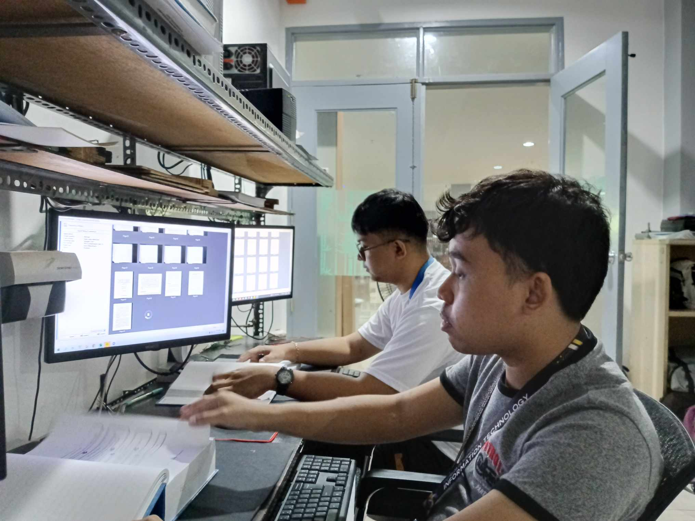
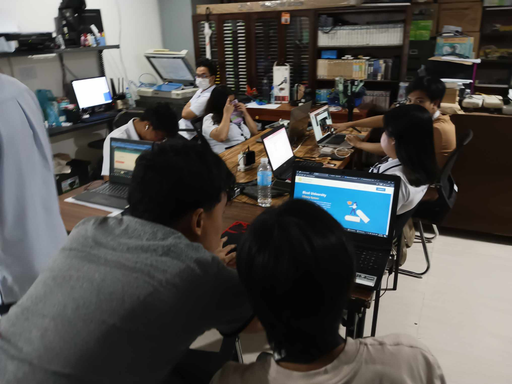

OJT Daily Entry for the Month of February






On this day February 12, And it is already our third day and "Monday na naman" and worry not it is another day and waiting for what task will be , and yes it is the same task last week since we are divided and assigned us some task and
HERE ARE SOME TASK I MADE:- Finishing again the scanning thesis paper I left last week
- I checked which thesis are already done scanned
- I help something to do with the dev team checking the website